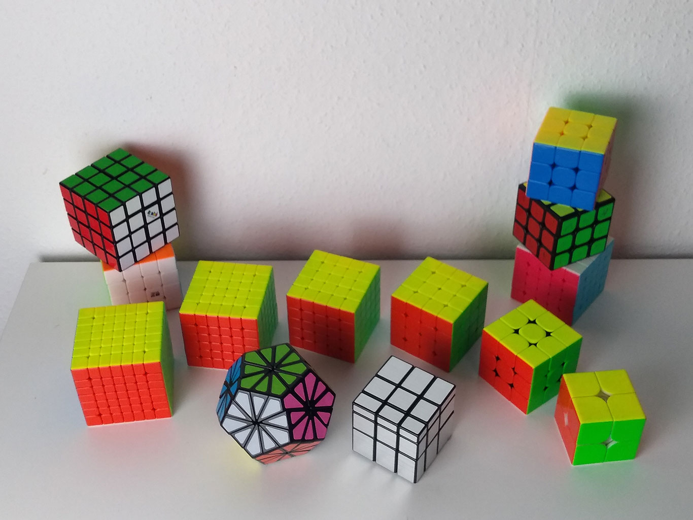
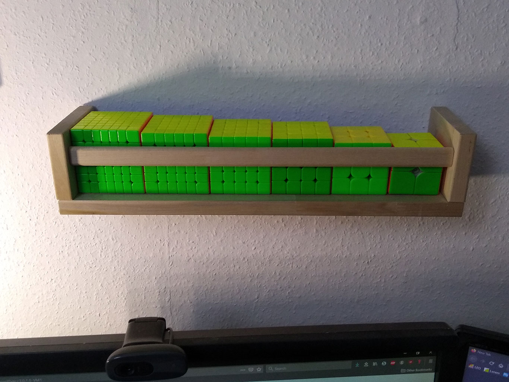

Wie ich zum "cubing" kam

Alles fing damit an, dass ich mir ein paar Ziele für mein Leben gesetzt habe. Unter anderem stand dann auch darauf der Eintrag "Rubik's Cube lösen können". Dort stand es dann auch erst mal eine Zeit lang.
Etwas ändern sollte sich daran während meiner Ausbildung zum Fachinformatiker, welche ich über eine schulische Fernausbidlung absolviert habe. Sofern der Dozent entweder verhindert, verdammt langweilig war oder mir einfach nichts mehr zu einem Thema beibringen konnte, lenkte ich mich mit dem Würfel ab.
Den Würfel einfach nur lösen zu lernen, ging recht schnell. Mittlerweile stand auf der "Eimer-Liste" jedoch schon "Den Würfel unter 1 Minute lösen". Das war mit der Anfänger-Methode allerdings nicht ganz so einfach, also lernte ich ein paar weitere Algorithmen.
Warum es zum Hobby wurde
Irgendwann hatte ich mein Ziel erreicht, den Würfel unter einer Minute zu lösen, aber es machte mir immer noch einfach Spaß weitere Techniken und Algorithmen zu lernen. Also setzte ich mir immer wieder neue Ziele und es wurde einfach zur Gewohnheit den Würfel immer wieder mal in die Hand zu nehmen. Es half unter anderem auch dabei einfach mal abzuschalten, wenn ich mich in einem "Gedanken-Karussell" befand.
Mittlerweile ist es einfach toll, immer wieder mal zu sehen, wie weit man schon fortgeschritten ist, wenn man zurückblickt, wie man angefangen hat.
Meine Sammlung
Mit der Zeit haben sich ein paar Würfel angesammelt, zum einen weil Ich selbst etwas Abwechslung wollte und zum anderen weil Verwandte und Freunde natürlich auch mitbekommen, was man für ein Hobby hat und dies als gute Geschenk-Option empfinden.

Warum soviele von der gleichen Sorte? Naja, je mehr Zeit man in ein Hobby investiert, desto bessere "Hardware" legt man sich zu. Der größte Unterschied besteht dann darin, wie gut sich die Würfel drehen lassen und ob sie "magnetisiert" sind. Und wenn man sich einmal an den Komfort von Magneten gewöhnt hat, möchte man sie nicht mehr missen (besonders bei den großen Würfeln).

Als Teil des Alltags müssen die meistgenutzten Würfel natürlich auch ständig griffbereit liegen ;)